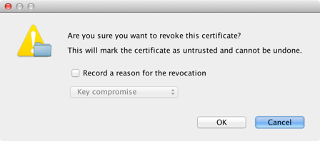
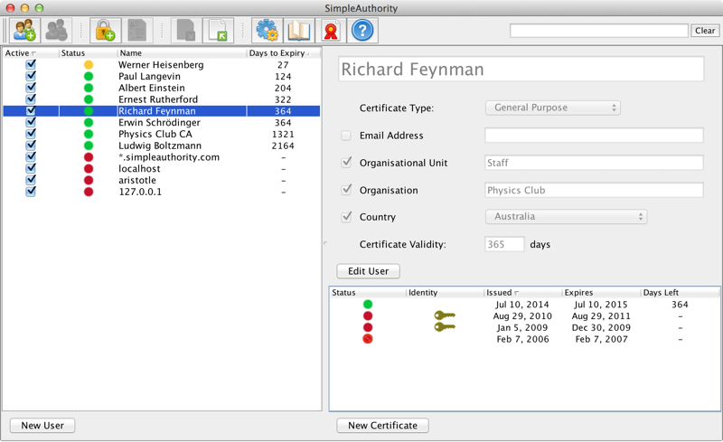

Managing Certificates
Viewing certificate details
A certificate's details can be viewed by double clicking the entry in the certificate table (at the bottom right of the main window) or by highlighting the entry and selecting Certificate Details in the menu bar.
The Simple tab of the certificate details dialog provides a summary of the most important certificate
fields, while the Advanced tab displays detailed information about all fields.
Exporting certificates
Certificates can be exported to file or directory. They can be exported one at a time or in bulk.
Certificates need to be exported to make them available to applications for encryption of data to other users. These applications include file and email encryption. Applications that do not utilise encryption, or always encrypt to the same recipient (such as a specific server), do not require copies of other user certificates. These applications include VPN clients, email signing and client SSL authentication. Server SSL applications also do not require copies of user certificates because of the way the SSL protocol operates (an encryption key is agreed between parties using a security handshake, rather than being passed from one party to the other).
A single user certificate can be exported by right clicking on the entry in the certificate table and selecting Export Certificate, or from the menu bar using Export > Selected Certificate..., or by dragging the entry from the certificate table to the file system. The CA certificate can be exported from the menu bar by selecting Export > CA Certificate....
Certificates can be exported in bulk by selecting Export > Latest Certificates.... This will export
the most recently issued valid certificate for each active user, and optionally also the CA certificate.
Directory publishing
(Enterprise license required) The Directory Publishing section of Options/Preferences contains the configuration settings for interfacing with an LDAP directory.
Most of these settings are self explanatory. The Publish to DN setting controls how certificates are
structured in the directory. The example below would have all certificates stored under the Base DN, i.e. a flat
structure. Alternative options exist to use a directory structure that includes the user's organisational unit
(ou), or both the organisation (o) and organisational unit (ou) components.
Revoking certificates and CRL generation
Revoking a certificate will permanently and irreversibly mark it as untrusted. You might want to do this if you suspect that the identity private key might have been compromised, or if the information contained in the certificate is no longer valid.
The list of certificates that have been revoked is distributed to security applications using a Certificate Revocation List (CRL). A CRL is a signed file that includes a list of all unexpired certificates issued by a CA that have been revoked and when they were revoked.
CRLs are a standard way of managing untrusted certificates, however they can be difficult to use in practice. Some security applications are not able to process CRLs. The need to distribute the CRL to relying applications and to ensure that it does not expire also needs to be considered. For these reasons, in many cases an easier and more efficient way of handling untrusted certificates is to use an Access Control List or a directory that holds only trusted certificates.
Revoked certificates are marked by a red cross over the certificate status icon in the SimpleAuthority main
window, e.g.  or .
or .
Certificates can be revoked by right clicking on the entry in the certificate table and selecting Revoke
Certificate. This will display a confirmation dialog that provides an option to specify the reason that the
certificate was revoked. The revocation reason will be included in the CRL if it is specified.

Revoked certificates are automatically removed from the directory when directory publishing is enabled and is configured to automatically publish new certificates when they are created. Revoked certificates are removed from the CRL after they have expired and at least one CRL has been issued.
The Certificate Revocation section of Options/Preferences contains settings that relate to certificate
revocation and CRL generation. These settings include the option to automatically maintain and update a CRL of all
revoked certificates, the format for automatically generated CRL files, an option to include the next update field
in the CRL which is required by some applications and indicates when the next CRL is expected to be issued, and an
option to include the CRL distribution point extension in certificates. The CRL distribution point extension
specifies one or more URLs that the CRL can be downloaded from. Multiple URL directories can be listed by
separating values with a semi-colon, e.g. http://public.com/CRL;http://internal.priv/CRL
In addition to using an automatically maintained CRL, a new CRL file can also be generated on demand by selecting Export > Certificate Revocation List... from the menu bar.
Expiry date calendar
The Expiry Date Calendar section of Options/Preferences contains settings to generate iCalendar files. These files provide a way for certificate expiry dates to be imported into a calendar application, to help prevent certificates from expiring unexpectedly. iCalendar files can be read by applications including Apple iCal, Microsoft Outlook and Mozilla Sunbird.
The option to maintain an iCalendar file containing certificate expiry dates generates a file with expiry dates for the most recently issued valid certificate for each active user, as well as any CA certificates. This file can also be generated by selecting Export > iCalendar of Expiry Dates... from the menu bar.
The option to publish single entry iCalendar files with new identity files will cause an iCalendar file to be
written to the output directory when any new certificates are created. This file with extension .ics
includes the expiry date of the newly issued certificate only. This approach is not as convenient for managing
expiry dates as using a single iCalendar file, but it is more widely supported in calendar applications.
iCalendar files for individual certificate records can also be created by right clicking on one or more entries
in the certificate table and selecting Export iCalendar of Expiry.
Managing certificate records
Certificates can be imported from external files. This is useful if you are migrating from an alternative CA product, or if you have existing certificates that you need to manage. Importing these certificates allows you to use SimpleAuthority to warn about pending certificate expiry.
To import a certificate, select the user that you want to associate the certificate with, right click and select
Import Certificate, or drag the certificate file from the file system to the certificate table. You can also
select Import > Certificate... from the menu bar, which will automatically register the imported
certificate with the correct user, creating a new user in the process if needed to hold the record. Certificates
can be imported from DER (.cer), PKCS#7 (.p7c) or PEM (.pem) encoded
files.
Individual certificate records can also be deleted. You may want to do this if you accidentally issue a
certificate with incorrect details. You should only do this if you are sure that all copies of the associated
identity (.p12) file have been deleted. To delete a certificate record, right click on the entry in
the certificate table and select Delete Record. This will also delete the certificate entry from the
directory if directory publishing is enabled and configured to publish new certificates automatically.
Certificates that have been issued by a CA other than the currently selected CA can be hidden from view by selecting View > Hide Certificates From Other CAs in the menu bar.
Managing identities
The Identity Files section of Options/Preferences includes an option to keep a backup of new user identities (private keys) when they are created. If this is enabled, the backup identities will be stored protected using the CA password.
Certificates that include a corresponding identity file have a key icon in the certificate (bottom right) table of the main window. See the example below.
Note that the Identity column that shows the key icons may not be visible if it has been hidden from view
using View > Show Columns > Identity Backups.

Identities may be exported to file by right clicking on the certificate entry and selecting Export Identity or Export > Selected Identity... from the menu bar. Identity files may be exported in PKCS#12, PEM without a password, or PEM with a password formats. The format is set during the export.
Identity files may also be imported by selecting Import > Identity... from the menu bar. You can import identity files in PKCS#12, PEM without a password, or PEM with a password formats. PEM formats require the corresponding certificate file to also be specified.